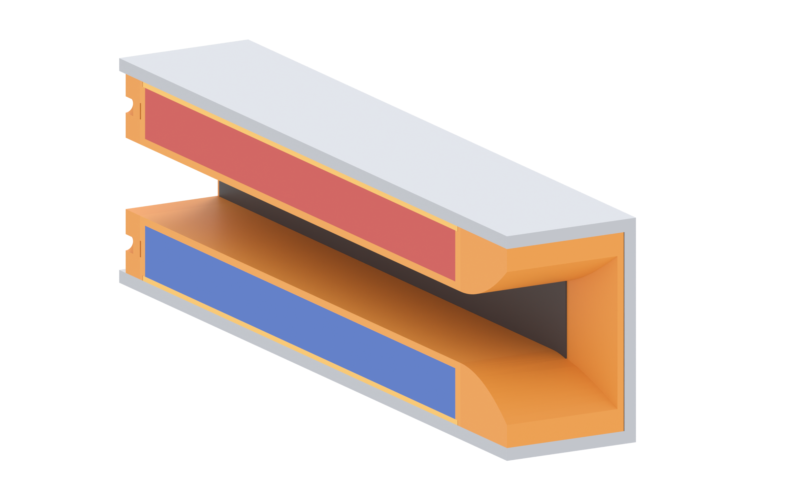
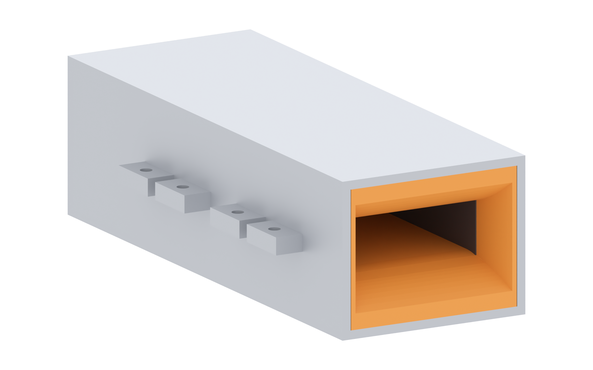

Brine runs through a 40 × 14 mm bore. A 483 mT field crosses it, current flows between two graphite plates on the side walls, and the Lorentz force pushes the water out the straight end. The yoke is the magnetic return path and the tray is the only thing keeping water away from the magnets — both get checked automatically every time the model rebuilds.

| z | Layer | Thickness | Function |
|---|---|---|---|
| 0 – 7 | bore | 14 tall | water channel, 40 wide |
| 7 – 8.5 | tray floor | 1.5 | the only barrier between water and magnets |
| 8.5 – 18.5 | magnet cavity | 10 | closed on all six sides |
| 18.5 – 19.5 | cap | 1.0 | locks the stack down, flush with the steel |
| 19.5 – 22 | steel plate | 2.5 | flux return |
metal/| File | Qty | Material | Notes |
|---|---|---|---|
clamshell-flat-2.5mm.dxf | 2 | 2.5 mm mild steel (DC01 / SPCC / AISI 1008) | Yoke blank 107.83 × 150. Plate plus two side walls, and the split-line flange cropped into four lugs of 16 mm per side — the lug pattern, not a continuous band. 317 g per half. |
plastic/| File | Qty | Size | Notes |
|---|---|---|---|
tray.stl | 2 | 124 × 50.7 × 19.5 | Closed magnet cavity, 1 mm cap ledge, 1 mm electrode groove. Floor down. |
cap.stl | 2 | 121.7 × 42.7 × 1.0 | Thin lid, 100 % infill — a clamp, not a shell. |
bellmouth.stl | 1 | 20 × 49.7 × 39 | 48 × 30 mouth to 40 × 14 over 20 mm. |
rear_block.stl | 1 | 5.5 × 49.7 × 39 | Outlet, 5 mm thick. Carries the lead channel. |
| Item | Qty | Notes |
|---|---|---|
| N52 tile 20 × 10 × 5, nickel plated | 96 | 48 per face: 6 along × 4 across × 2 deep. |
| Graphite plate, 134 × 14 × 2 | 2 | 124 mm wetted; ends sit 5 mm inside the end blocks. |
| M3 × 16 bolt + nut + washer | 8 | Through the yoke lugs at the split line. |
| Epoxy (30 min+) | — | Magnets to tray, and the lead exit after wiring. |
| Parameter | Value | Where it comes from |
|---|---|---|
| Sheet thickness | 2.5 | one gauge, plate and wall |
| Flat blank | 107.83 × 150 | 56 plate + 2 × (19.96 wall + 5.96 lug) |
| Fold 1 — wall | at ±28 | down 90°, forms the bore side |
| Fold 2 — lug flange | at ±47.96 | out 90°, lugs only, 4 × 16 mm per side |
| Bend allowance | 2.042 | K = 0.44, Rin = 0.2 |
| Mass per half | 317 g | 7.85 g/cm³ |
| Part | Layer | Walls | Infill | Orientation |
|---|---|---|---|---|
| tray | 0.2 | 4 | 40 % | floor down, cavity open-side up, no supports |
| cap | 0.16 | 3 | 100 % | flat |
| bellmouth | 0.2 | 3 | 25 % | mouth up |
| rear_block | 0.2 | 4 | 40 % | flat face down |
The magnet cavity had three ways in. All three are closed, and each one is a hard assert in the build script — the model refuses to export if any reopens.
| Leak path | What was wrong | Fix |
|---|---|---|
| electrode groove roof | the 2.2 mm groove was cut 3.0 deep from z 7.0, so its ceiling sat at z 10.0 — 1.5 mm above the cavity floor at 8.5. The groove ran the full 124 mm with an open top: a gutter into the magnet pocket. | groove cut 1.0 deep (7.0 → 8.0), ceiling 0.5 mm below the cavity floor. 0.5 mm of floor covers the electrode lip, 4.85 mm of solid wall sits behind it. |
| end-block peg holes | pegs were located with holes drilled 2.6 mm into a 2.0 mm end wall — both ends were through-holes into the cavity. | blind holes 1.6 deep, 0.4 mm of plastic left behind, plus a 2.3 mm lead-in. Pegs shortened to 2.0 mm. |
| magnet lead exit | a full-length bore through the rear block opened the cavity to the outside. | blind channel from the outside of the outlet wall, stopping 0.4 mm short. You drill it through at build time and epoxy around the wire. |
Cut two blanks. Fold 90° down at ±28 (the walls), then fold the lugs out 90° at ±47.96. Four lugs per side, 16 mm long, one Ø3.4 hole each.
Check: 56 mm across the plate, 22 mm plate face to lug face, holes on the split line at ±50.94.
Eight tiles per row, four rows, two layers deep — 48 per face. Two 5 mm layers make the 10 mm bar and fill the cavity 8.5 → 18.5.
Compass-check every row before the epoxy sets. All four rows on one face point the same way; the opposite face points the other way.
Drop the 1 mm cap into the ledge in the tray rim. It sits on the magnets, top face flush with the steel inner face, and stops the stack lifting when the field pulls. A bead of epoxy at the rim, never a puddle — epoxy in the bore is unreachable once closed.
Each 134 × 14 × 2 plate slides into the 1 mm groove from the end. Its top shoulder hides behind 0.5 mm of floor; the full 14 mm face is exposed — 124 × 14 = 1736 mm² per electrode.
Push each plate until its end sits 5 mm inside the bellmouth or rear-block pocket. That pocket is the end seal.
Two 2 mm pegs each, into the blind holes in the tray end faces. The bellmouth takes the 48 × 30 mouth to the bore over 20 mm.
At the outlet, drill through the last 0.4 mm of the lead channel, feed the two wires out, epoxy the hole closed around them. Keep the outlet straight — a diverging nozzle measured 0.3 → 0.2 m/s.
Lower tray into the bottom yoke, upper into the top, bring the halves together so the lug faces meet. Eight M3 through the lugs, tightened in a cross pattern a little at a time.
The lugs are 8 mm strips around Ø3.4 holes, so location comes from the bolt shanks. Add two 3 mm dowels through the lug pairs if it will get knocked around.

| Joint | Clearance | Consequence if wrong |
|---|---|---|
| magnet in cavity | 0.3 per side | press fit cracks tiles |
| cap in rim ledge | 0.15 per side | cap lifts, magnets float up |
| tray in yoke throat | 0.15 per side | tray rattles, wears through the 1.5 mm floor |
| electrode in groove | 1.0 deep, 0.2 wide | too deep = groove opens into the cavity |
| electrode end in pocket | 5 mm deep | short end = leak behind the electrode |
| peg in end wall | 1.6 blind | deeper = hole through into the magnets |
| M3 in lug hole | Ø3.4 | standard M3 clearance |